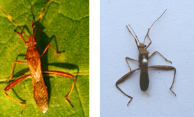
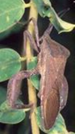
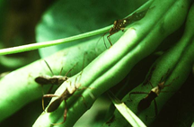

| Home |
| PULSES |
| 1. Bean Aphid |
| 2. Thrips |
| 3. Whitefly |
| 4. Green Leafhopper |
| 5. Pod Bug |
| 6. Lab-lab bugs / Stink bug |
| 7. leaf webber |
| 8. lab-lab leaf miner |
| 9. termites |
| questions |
| download notes |
PESTS OF PULSES :: Major Pests :: Pod Bug
5. Pod bug: Riptortus pedestris, Clavigralla gibbosa, Clavigralla horrens, Anoplocnemis phasiana (Coreidae: Hemiptera)
 |
 |
Riptortus pedestris |
Anoplocnemis phasiana |
Host range: Redgram and other pulses. Damage symptoms: The nymphs and adults suck the juice of unripe seeds from the green pods. In case of severe infestation the tender parts get shrivelled and later dries up. The bugs are seen clustered around on the pods. |
 |
Bionomics: Riptortus pedestris - The female bug lays an average of 115 eggs singly on pods at their base. The egg period is 3-4 days. The nymphs are brownish black and hemispherical which resembles brown ant. The nymphal stage undergoes 5 instars in 16 days. Clavigralla gibbosa - It is bigger than C. horrens in size. It lays eggs in groups of 3-15 on pods or leaves. The fecundity is 60-400 eggs per female. The incubation period is 4 days. There are 5 nymphal instars. The nymphal duration varies from 7-31 days. The adult bug lives upto 150 days. C. horrens - It is brown, flat, narrow - bodied bug with conspicuous lateral spines on the prothorax and enlarged hind femur.
Management: Spraying the infested crop with endosulfan 35 EC 2.0 L in 700 - 1000 L water per hectare